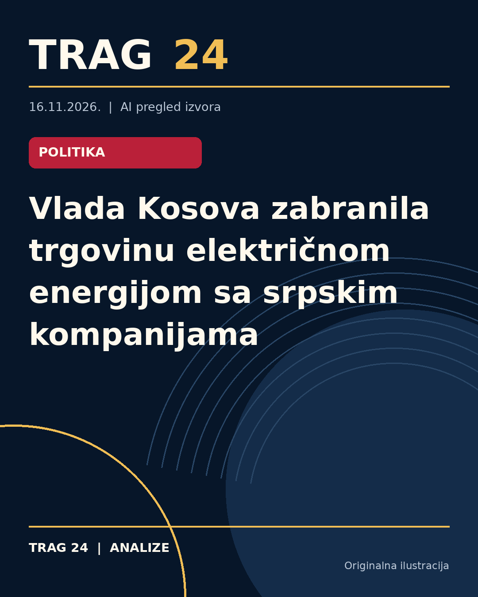

Vlada Kosova zabranila trgovinu električnom energijom sa srpskim kompanijama

ŠTA SE DOGODILO
Vlada Kosova donela je odluku o zabrani trgovine električnom energijom sa preduzećima registrovanim u Srbiji ili onima čiji su vlasnici državljani Srbije. Odluka je odgovor na, kako je naveo premijer Aljbin Kurti, šestogodišnje blokiranje prekograničnih vodova za trgovinu električnom energijom od strane Srbije.
HRONOLOGIJA
Prema izjavama premijera Kurtija, problem sa prekograničnom trgovinom traje već šest godina od sticanja energetske nezavisnosti Kosova. U decembru prethodne godine, Savet ministara Energetske zajednice konstatovao je da Srbija krši ugovor time što blokira dalekovode i obavezao je da se oni oslobode najkasnije do 1. jula 2026. godine. Nakon što Srbija nije sprovela ovu odluku, Kosovo je preduzelo pravne i političke mere, uključujući pokušaje rešavanja pitanja putem Evropske unije, ali bez uspeha. Rezultat je današnja zabrana trgovine električnom energijom sa srpskim kompanijama.
ŠTA NAVODE IZVORI
Premijer Kurti ističe da zabrana trgovine nije usmerena protiv kupovine električne energije iz Srbije već zbog blokade korišćenja prekogranične infrastrukture za tranzit električne energije. Kurti navodi da je do sada došlo do finansijske štete i ugrožavanja snabdevanja usled blokade. Takođe, kosovska vlada je usvojila hitne mere za stabilizaciju snabdevanja električnom energijom u trajanju od dva meseca, koje uključuju korišćenje postojećih kapaciteta kao što je hidroelektrana Gazivode, i uvođenje mera za uštedu električne energije u javnim institucijama. Izuzetak od zabrane je snabdevač osnovan Briselskim sporazumom o energetici.
ŠTA JE POTVRĐENO
Potvrđeno je da je zabrana trgovine električnom energijom sa srpskim firmama zvanično doneta na sednici Vlade Kosova. Takođe, poznato je da se zabrana odnosi na kupovinu, prodaju, uvoz i izvoz električne energije, direktno ili kroz treće zemlje. Premijer Kurti potvrđuje da postoje pravne i diplomatske aktivnosti pre donošenja ove odluke, te da se problematični vodovi još uvek ne koriste za prekogranični promet. Nevladini podaci o instalisanim kapacitetima snabdevanja Kosova približno su usaglašeni između izvora.
ŠTA NIJE POTVRĐENO
Nema nezavisnih potvrda o tome da je Srbija formalno blokirala vodove, osim premijerovih izjava. Takođe, ne postoje potvrđeni podaci o konkretnim problemima u snabdevanju ili o tačnim finansijskim posledicama koje su nastale blokadom. Krajnje posledice ove zabrane i njena implementacija nisu detaljno obrazložene iz dostupnih izvora.
ŠTA OSTАJE OTVORENO: Ostaje nejasno kako će se zabrana sprovesti u praksi i kako će uticati na tržište električne energije u regionu. Takođe ostaje pitanje daljih pregovora između Kosova i Srbije, kao i da li postoji mogućnost da se prekogranični vodovi oslobode pre datuma navedenog u odluci Energetske zajednice. Nije poznato ni kako će Evropska unija reagovati na ovu situaciju i koje dodatne mere bi mogle biti preduzete.
Izvori
- https://www.danas.rs/vesti/ekonomija/vlada-kosova-zabranila-trgovinu-elektricnom-energijom-sa-srpskim-kompanijama/
- https://insajder.net/prenosimo/vlada-kosova-zabranila-trgovinu-elektricnom-energijom-sa-srpskim-kompanijama
- https://n1info.rs/biznis/vlada-kosova-zabranila-trgovinu-elektricnom-energijom-sa-srpskim-kompanijama/
Ova analiza je pripremljena uz pomoć veštačke inteligencije na osnovu javno dostupnih izvora. Navodi izvora nisu nužno nezavisno potvrđeni.